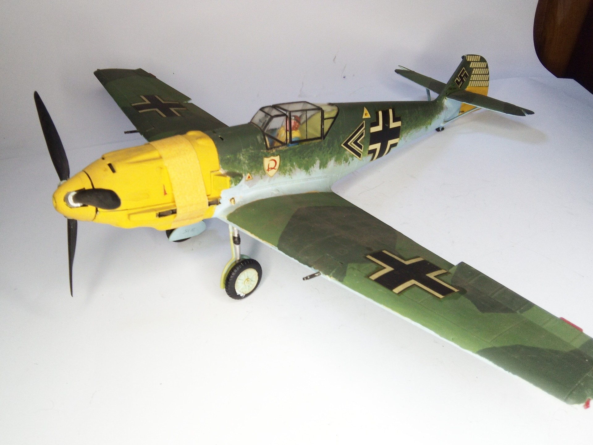
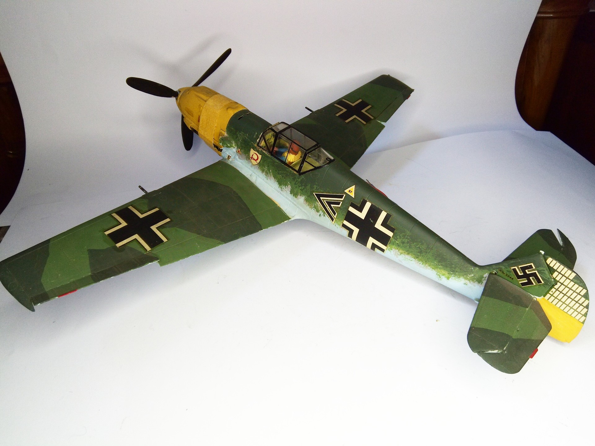

Aerei · scale model archive
Messecrschmitt Me109 E
Messecrschmitt Me109 E — Kit: Airfix, Scale: 1/24. Flown by Helmut Wick Geschwader Kommodore JG2 ´Richtofen´. Second kit of the iconic Airfix 1/24 series…

Photo gallery

English description
Flown by Helmut Wick Geschwader Kommodore JG2 ´Richtofen´.
Second kit of the iconic Airfix 1/24 series
#1/24 #Airfix #Me109E
Descrizione italiana
Pilotato da Helmut Wick, Geschwaderkommodore del JG2 “Richthofen”. Secondo kit della mitica serie Airfix in scala 1/24.